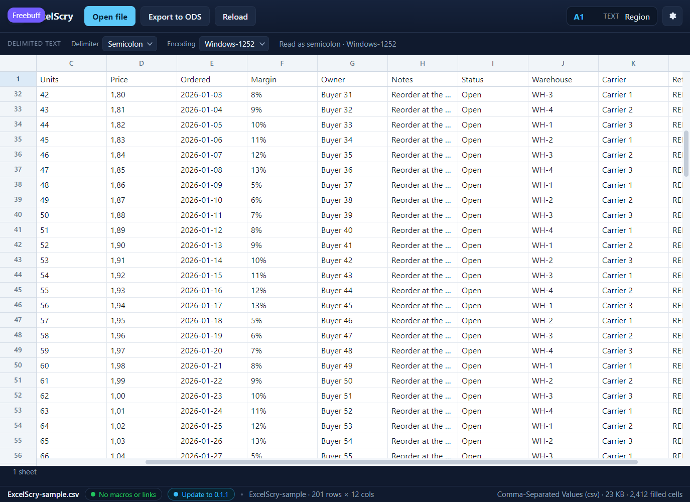

<!doctype html>
<meta charset="utf-8">
<title>ExcelScry — a text table's header stays in view</title>
<style>
  body { margin: 0; background: #1b1d22; color: #c9cdd6;
         font: 14px/1.5 Segoe UI, system-ui, sans-serif; }
  figure { margin: 0; }
  img { display: block; width: 100%; height: auto; }
  figcaption { padding: 12px 16px; }
  code { color: #8fd3ff; }
</style>
<figure>
  
  <figcaption>
    A two-hundred-row <code>.csv</code>, scrolled to row 32 and moved sideways
    to column C. Its first record — <code>Region</code>, <code>Product</code>,
    <code>Units</code>, <code>Price</code> and the rest — stays pinned at the
    top of the grid, with row number&nbsp;<strong>1</strong> beside it, so a
    value under <code>Units</code> never needs a scroll back to the top to be
    read. The pinned strip moves with the columns, stops at the scrollbar, and
    takes the selection outline with it when the selected cell is in that row.
    It is only pinned for delimited text: a workbook's first row is data, not
    necessarily a header. (Shown in the UI harness, which serves this front end
    against mocked rows.)
  </figcaption>
</figure>
